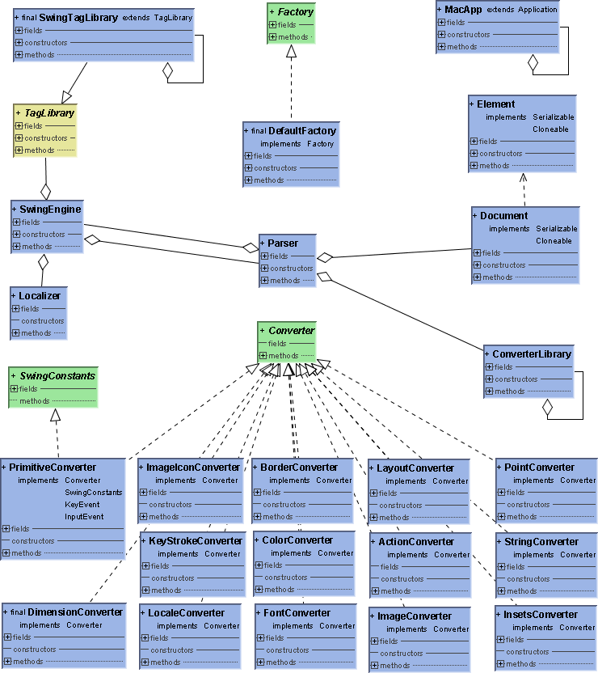

org.swixml.Parser
org.swixml.Parser
|
SWIXML 1.6 beta 1 (#151) |
|||||||||
| PREV CLASS NEXT CLASS | FRAMES NO FRAMES | |||||||||
| SUMMARY: NESTED | FIELD | CONSTR | METHOD | DETAIL: FIELD | CONSTR | METHOD | |||||||||
java.lang.Object
public class Parser
Singleton Parser to render XML for Swing Documents

SwingTagLibrary,
ConverterLibrary| Field Summary | |
|---|---|
static String |
ATTR_ACTION
Allows to provides swixml tags with a dynamic update class |
static String |
ATTR_BUNDLE
Additional attribute to collect layout constrain information |
static String |
ATTR_CONSTRAINTS
Additional attribute to collect layout constrain information |
static String |
ATTR_ID
Allows to provides swixml tags with an unique id |
static String |
ATTR_INCLUDE
Allows to provides swixml tags with an unique id |
static String |
ATTR_INITCLASS
Allows to provides swixml tags with a dynamic update class |
static String |
ATTR_LOCALE
Additional attribute to collect layout constrain information |
static String |
ATTR_MACOS_ABOUT
Attribute name that flags an Action as the default Aboutbox handler on a Mac |
static String |
ATTR_MACOS_OPENAPP
Attribute name that flags an Action as the default Open Application handler on a Mac |
static String |
ATTR_MACOS_OPENFILE
Attribute name that flags an Action as the default Open File handler on a Mac |
static String |
ATTR_MACOS_PREF
Attribute name that flags an Action as the default Preferences handler on a Mac |
static String |
ATTR_MACOS_PREFIX
Prefix for all MAC OS X related attributes |
static String |
ATTR_MACOS_PRINT
Attribute name that flags an Action as the default Print handler on a Mac |
static String |
ATTR_MACOS_QUIT
Attribute name that flags an Action as the default Quit handler on a Mac |
static String |
ATTR_MACOS_REOPEN
Attribute name that flags an Action as the default Re-Open Applicaiton handler on a Mac |
static String |
ATTR_PLAF
Additional attribute to collect information about the PLAF implementation |
static String |
ATTR_REFID
Allows to provides swixml tags with a reference to another tag |
static String |
ATTR_USE
Deprecated. use refid instead |
static String |
GETINSTANCE
Method name used with initclass - if this exit, the update class will no be instanced but getInstance is called |
static Vector<String> |
LOCALIZED_ATTRIBUTES
Localiced Attributes |
| Constructor Summary | |
|---|---|
Parser(SwingEngine engine)
Constructs a new SwixMl Parser for the provided engine. |
|
| Method Summary | |
|---|---|
Object |
parse(Document jdoc)
Converts XML into a javax.swing object tree. |
void |
parse(Document jdoc,
Container container)
Converts XML into a javax.swing object tree. |
| Methods inherited from class java.lang.Object |
|---|
clone, equals, finalize, getClass, hashCode, notify, notifyAll, toString, wait, wait, wait |
| Field Detail |
|---|
public static final String ATTR_CONSTRAINTS
public static final String ATTR_PLAF
public static final String ATTR_BUNDLE
public static final String ATTR_LOCALE
public static final String ATTR_ID
public static final String ATTR_REFID
public static final String ATTR_USE
ATTR_REFID,
Constant Field Valuespublic static final String ATTR_INCLUDE
public static final String ATTR_INITCLASS
public static final String ATTR_ACTION
public static final String ATTR_MACOS_PREFIX
public static final String ATTR_MACOS_PREF
public static final String ATTR_MACOS_ABOUT
public static final String ATTR_MACOS_QUIT
public static final String ATTR_MACOS_OPENAPP
public static final String ATTR_MACOS_OPENFILE
public static final String ATTR_MACOS_PRINT
public static final String ATTR_MACOS_REOPEN
public static final String GETINSTANCE
public static final Vector<String> LOCALIZED_ATTRIBUTES
| Constructor Detail |
|---|
public Parser(SwingEngine engine)
engine - SwingEngine| Method Detail |
|---|
public void parse(Document jdoc,
Container container)
throws Exception
Note: This parse method does not return a swing object but converts all sub nodes of the xml documents root into seing objects and adds those into the provided container. This is useful when a JApplet for instance already exists and need to get some gui inserted.
jdoc - Document providing the XML documentcontainer - Container container for the XML root's children
Exception - if parsing fails
public Object parse(Document jdoc)
throws Exception
Reads XML from the provied Reader and builds an intermediate jdom document.
Tags and their attributes are getting converted into swing objects.
jdoc - Document providing the XML document
java.awt.Container root object for the swing object tree
Exception - if parsing fails
|
SWIXML 1.6 beta 1 (#151) |
|||||||||
| PREV CLASS NEXT CLASS | FRAMES NO FRAMES | |||||||||
| SUMMARY: NESTED | FIELD | CONSTR | METHOD | DETAIL: FIELD | CONSTR | METHOD | |||||||||